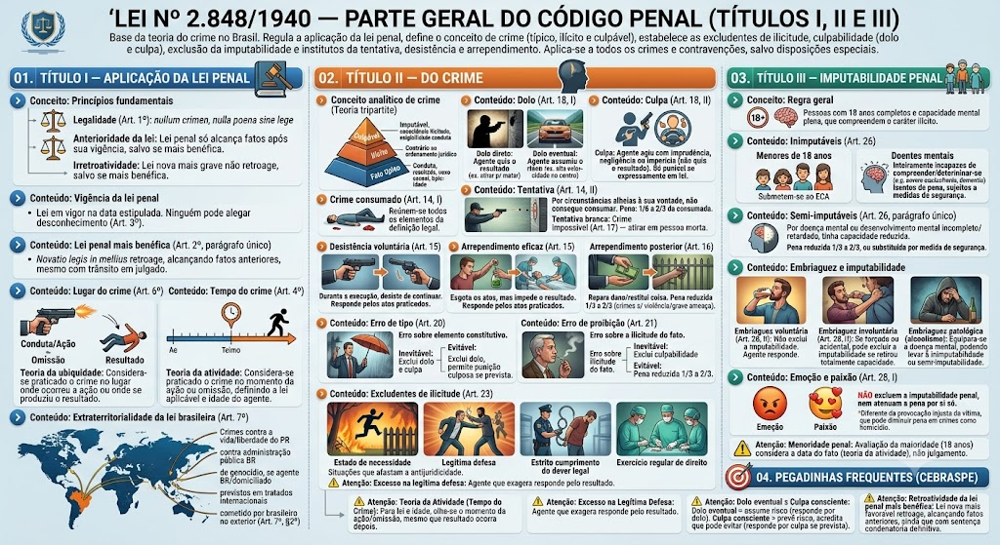

Material de estudo: Lei nº 2.848/1940 — Parte Geral do Código Penal (Títulos I, II e III)
Material complementar · Ver fonte no GitHub
Título I — Aplicação da Lei Penal
Princípios fundamentais
O Título I estabelece as regras de aplicação da lei penal, com base nos seguintes princípios:
- Legalidade (Art. 1º): Não há crime sem lei anterior que o defina, nem pena sem prévia cominação legal (*nullum crimen, nulla poena sine lege*).
- Anterioridade da lei: A lei penal só alcança fatos ocorridos após sua vigência, salvo se for mais benéfica ao réu (retroatividade).
- Irretroatividade da lei penal: A lei nova mais grave não retroage, salvo se for mais benéfica ao réu.
Vigência da lei penal
A lei penal entra em vigor na data nela estipulada. Ninguém pode alegar desconhecimento da lei após sua vigência (Art. 3º).
Lei penal mais benéfica (Art. 2º, parágrafo único)
A lei posterior que for mais favorável ao réu (novatio legis in mellius) retroage e alcança fatos anteriores, mesmo que já tenham sido julgados por sentença condenatória definitiva (trânsito em julgado).
Lugar do crime (Art. 6º)
Adota-se a teoria da ubiquidade: considera-se praticado o crime no lugar onde ocorreu a ação ou omissão (conduta) ou onde se produziu o resultado (em qualquer dos dois).
Tempo do crime (Art. 4º)
Adota-se a teoria da atividade: considera-se praticado o crime no momento da ação ou omissão, ainda que outro seja o momento do resultado. Isso define a lei aplicável e a idade do agente.
Extraterritorialidade da lei brasileira (Art. 7º)
A lei brasileira aplica-se a crimes cometidos no exterior em certas hipóteses, como:
- Crimes contra a vida ou liberdade do Presidente da República;
- Crimes contra a administração pública brasileira;
- Crimes de genocídio, quando o agente for brasileiro ou domiciliado no Brasil;
- Crimes previstos em tratados internacionais.
Aplica-se também a crime cometido por brasileiro no exterior, nas condições do Art. 7º, §2º (extraterritorialidade condicionada ou incondicionada).
Título II — Do Crime
Conceito analítico de crime (Teoria tripartite)
Crime é fato típico, ilícito (antijurídico) e culpável:
- Fato típico: conduta (ação ou omissão) que se enquadra no tipo penal (tipicidade), com resultado e nexo causal.
- Ilicitude (antijuridicidade): conduta contrária ao ordenamento jurídico (não amparada por excludente).
- Culpabilidade: o agente é reprovável (imputável, com potencial consciência da ilicitude e exigibilidade de conduta diversa).
Dolo (Art. 18, I)
Dolo direto: o agente quis o resultado (ex.: atirar para matar).
Dolo eventual: o agente assumiu o risco de produzir o resultado (ex.: dirigir em alta velocidade no centro da cidade, assumindo o risco de atropelar alguém).
Culpa (Art. 18, II)
Culpa: o agente não quis o resultado, mas agiu com imprudência, negligência ou imperícia.
- Imprudência: agir sem cautela (ex.: disparar arma no ar);
- Negligência: omitir cuidado devido (ex.: não frear o veículo);
- Imperícia: falta de habilidade técnica (ex.: médico sem capacidade para realizar cirurgia).
A culpa só é punível se prevista expressamente em lei (culpa não é presumida).
Crime consumado (Art. 14, I)
Crime consumado quando nele se reúnem todos os elementos da definição legal (tipo penal). Ex.: homicídio consumado com a morte da vítima.
Tentativa (Art. 14, II)
Tentativa ocorre quando o agente, por circunstâncias alheias à sua vontade, não consegue consumar o crime. Ex.: tiro que erra o alvo.
Pena: de 1/6 a 2/3 da pena do crime consumado.
Tentativa branca (ou incruenta): crime impossível (Art. 17) — não há tentativa quando o meio ou objeto é ineficaz ou impropério (ex.: atirar em pessoa já morta).
Desistência voluntária (Art. 15)
O agente, durante a execução, desiste de continuar (ex.: aponta a arma e desiste de atirar). Responde apenas pelos atos já praticados, não pela tentativa.
Arrependimento eficaz (Art. 15)
O agente esgota os atos de execução, mas se arrepende e impede o resultado (ex.: dá veneno, mas leva a vítima ao hospital). Também responde apenas pelos atos praticados, não pelo resultado.
Arrependimento posterior (Art. 16)
O agente, após a consumação, repara o dano ou restitui a coisa, até o recebimento da denúncia ou queixa. Pena reduzida de 1/3 a 2/3 (aplica-se a crimes cometidos sem violência ou grave ameaça).
Erro de tipo (Art. 20)
Erro sobre elemento constitutivo do tipo penal (ex.: pensa que está levando seu guarda-chuva, mas é de outra pessoa).
- Erro inevitável (escusável): exclui o dolo e a culpa (atípico).
- Erro evitável (inexcusável): exclui o dolo, mas permite punição por crime culposo, se previsto em lei.
Erro de proibição (Art. 21)
Erro sobre a ilicitude do fato (o agente acreditava sinceramente que sua conduta era lícita).
- Erro inevitável: exclui a culpabilidade (atípico).
- Erro evitável: a pena pode ser reduzida de 1/3 a 2/3.
Excludentes de ilicitude (Art. 23)
São situações que afastam a antijuridicidade da conduta. O agente não comete crime:
- Estado de necessidade: sacrifica-se um bem menor para salvar um bem maior (ex.: invadir terreno para fugir de tiroteio);
- Legítima defesa: repele-se, com moderação, agressão injusta, atual ou iminente, a si ou a terceiro;
- Estrito cumprimento do dever legal: o ato é praticado exatamente como a lei determina (ex.: PM algema preso resistente);
- Exercício regular de direito: o ato é lícito por si mesmo (ex.: médica que realiza cirurgia com consentimento).
Excesso na legítima defesa
O agente que exagera na dose da defesa (excesso doloso ou culposo) responde pelo resultado que causou, não estando mais amparado pela excludente de ilicitude de forma integral.
Título III — Imputabilidade Penal
Regra geral
Respondem pelos crimes as pessoas com 18 anos completos e com capacidade mental plena, que compreendem o caráter ilícito do fato e podem determinar-se de acordo com esse entendimento.
Inimputáveis (Art. 26)
São inimputáveis, isentos de pena e sujeitos a medidas de segurança:
- Menores de 18 anos (submetem-se ao ECA);
- Doentes mentais: que, ao tempo do crime, eram inteiramente incapazes de compreender o caráter ilícito do fato ou de determinar-se de acordo com esse entendimento (ex.: esquizofrenia grave, demência avançada).
Semi-imputáveis (Art. 26, parágrafo único)
A pessoa que, por doença mental ou desenvolvimento mental incompleto ou retardado, tinha capacidade reduzida de entendimento.
Consequência: a pena pode ser reduzida de 1/3 a 2/3, ou pode ser substituída por medida de segurança (internação ou tratamento ambulatorial).
Embriaguez e imputabilidade
Embriaguez voluntária (Art. 28, II): não exclui a imputabilidade; o agente responde pelo crime, mesmo que estivesse embriagado. Exceção: se houver comprovação de que a embriaguez retirou totalmente a capacidade de entendimento, pode ser considerada semi-imputabilidade (mas a jurisprudência é restritiva).
Embriaguez involuntária (Art. 28, II, in fine): se o agente foi forçado a beber ou ingeriu bebida acidentalmente, a embriaguez pode excluir a imputabilidade se retirou totalmente a capacidade de entendimento.
Embriaguez patológica (alcoolismo): equipara-se a doença mental, podendo levar à inimputabilidade ou semi-imputabilidade.
Emoção e paixão (Art. 28, I)
A emoção (raiva, medo intenso momentâneo) e a paixão (amor cego, ciúme obsessivo) NÃO excluem a imputabilidade penal, nem atenuam a pena por si só (diferente da provocação injusta da vítima, que pode ser causa de diminuição em crimes como o homicídio).
Menoridade penal
A avaliação da maioridade penal (18 anos) considera a data do fato (teoria da atividade), e não a data em que o processo é julgado ou a pena é cumprida.
Pegadinhas Frequentes (CEBRASPE)
Teoria da Atividade (Tempo do Crime)
Para saber qual lei se aplica e qual a idade do agente, olha-se o momento da ação ou omissão, mesmo que o resultado ocorra horas, dias ou meses depois.
Excesso na Legítima Defesa
O agente que exagera na defesa (excesso doloso ou culposo) respende pelo resultado, não estando mais amparado pela excludente de forma integral.
Dolo eventual x Culpa consciente
No dolo eventual, o agente assume o risco do resultado (responde por crime doloso). Na culpa consciente, o agente prevê o risco, mas acredita sinceramente que pode evitá-lo (responde por crime culposo, se previsto).
Retroatividade da lei penal mais benéfica
A lei nova mais favorável retroage, alcançando fatos anteriores, ainda que já tenha sido proferida sentença condenatória definitiva (trânsito em julgado).
Mapa-mental
Mapa-mental
